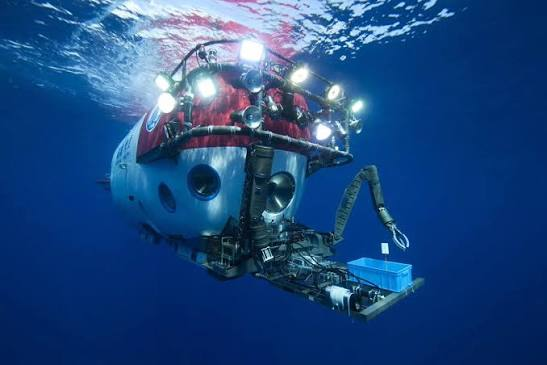
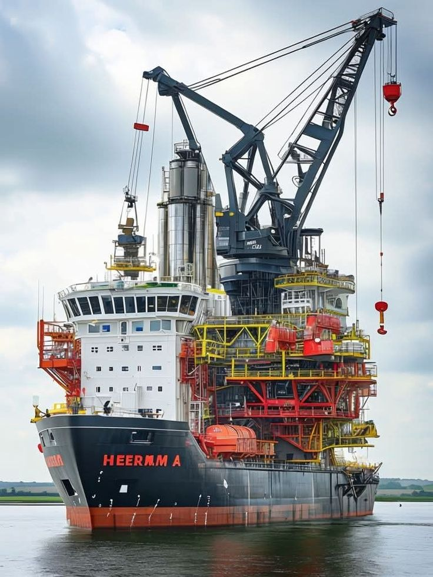

国内普通船舶设计和工程实施能力已经较强；短板更多集中在高端软件、复杂仿真、通用生产设计、自动化导航，以及整套工业软件生态。点选卡片阅读完整分析。
理解「卡脖子」时，不宜把它理解成「中国什么都不会」。更准确的说法是：在产能与工程执行已经很强的前提下，高端工具链、基础数据、认证案例与全球生态仍有断层。国外优势往往来自几十年积累的模型库、海试数据、事故案例和客户反馈，短期投入资金很难完全复制。
点击条目，下方展开完整论述。
复杂船型 · 协同 · 工程库
多物理场 · 可信验证
标准不一 · 协同困难
冗余 · 认证 · 案例
雷达 · 惯导 · 网络安全
标准 · 社区 · 商业模式
国内普通船舶设计和工程实施能力已经较强，但在大型复杂船舶、豪华邮轮、深海装备和高端海工领域，仍需要加强参数化设计、多专业协同、全生命周期管理、工程数据库和设计可靠性。
国外软件通常拥有数十年的模型库、材料库、规则库、验证案例和全球客户反馈。工程师打开软件时，其实也在调用一整套被行业验证过的「隐性知识」。
流体仿真、结构分析、热流体耦合、碰撞分析、疲劳分析和大规模并行计算仍是重要短板。
船舶仿真要求模型、工况设定与验证流程同时可靠。软件必须经过大量工程案例验证，计算结果还要能够被船厂、船东和船级社信任。市场需要「仿真模型 + 试验数据 + 历史事故案例 + 船级社规则」的一体化能力，并且能够告诉工程师计算结果的可信度和适用范围。
国内船厂拥有很强的现场经验，但不同船厂往往使用各自开发的系统，标准、接口和数据模型不统一。这会造成设计重复、变更难追踪、现场信息反馈慢和不同企业之间难以协同。
因此，卡点在于有没有可跨厂复用的通用产品与数据标准。否则每个项目都要重新定制，知识和接口无法沉淀。
在大型船舶综合自动化、动力定位、电力推进、船桥集成、实时控制器和高可靠冗余系统方面，国外企业积累更深。
这类系统必须长时间稳定运行，还要通过严格认证，替换成本很高，因此客户通常更看重可靠性和历史案例，而不仅仅是采购价格。新进入者即便功能接近，也需要较长时间才能进入船东与船级社的信任清单。
高端雷达、电子海图、惯性导航、卫星通信、多传感器融合和船舶网络安全仍有较高技术门槛。
智能船桥与自主航行越往前走，对传感器精度、融合算法、冗余通信和网络安全的要求越高。这些系统一旦出错，直接影响航行安全，因此认证与实船验证周期很长。
真正困难的部分往往在于建立完整生态，包括：统一数据标准、接口协议、二次开发工具、技术支持、认证体系、用户社区和长期商业模式。
没有生态，单点软件很难被持续使用与迭代；有了生态，模型库、插件、培训与服务网络会形成正反馈。这解释了为什么「功能追上」之后，仍可能在市场渗透上落后。
政策大致集中在高端化、绿色化、智能化和自主可控。切换阅读详细内容。


包括大型 LNG 运输船、超大型集装箱船、豪华邮轮、大型客滚船、海上风电安装船、深海工程装备和特种船舶。
这些船型的共同点是：系统复杂、规范严格、多专业耦合强、对设计软件与项目管理能力要求高。它们既是产值与附加值高地，也是检验一国船舶科技深度的试金石。
包括 LNG 双燃料、甲醇、氨、氢、电池混合动力、岸电、节能推进器、碳排放监测和碳核算软件。
绿色化覆盖燃料供应、舱容、安全、加注、船员培训、监测核算与经营决策（租船报价、改造时点）整条链。软件工具链不完整，会直接拖慢船队转型。
包括智能机舱、智能船桥、远程运维、数字孪生、智能配载、自动靠泊、自主航行和船岸一体化。
智能化的关键在于：感知数据是否可信、连接是否统一、分析是否能超前预警、决策是否可解释，以及在断网情况下系统能否降级运行。完全自主航行仍受复杂环境、责任认定与法规约束。
包括船舶 CAD 和 CAE、PLM 和 MES、工业数据库、实时控制器、工业操作系统、船舶网络安全和国产芯片。
自主可控的目标，是在关键工具链上具备可替代、可验证、可长期演进的能力，并避免停留在短期「替换演示」。它与高端化、绿色化、智能化相互咬合：没有软件与控制底座，后三条主线都会受制于人。